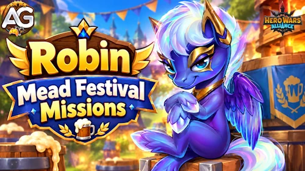

Mead Festival introduces the new pet Robin in Hero Wars: Dominion Era and succeeds the Autumn Festival. This guide lists all 114 mission milestones across 12 quest categories: eight for Mead Festival and four for Robin's progression.

Guide Contents
Mission Overview
Use the last listed requirement to see the maximum target for each category. The numbers below are milestones, not separate amounts to add together.
| Quest | Milestones | Final target |
|---|---|---|
| A Regular's Routine | 5 | Log in 5 times during a special event |
| Crowd Favorite | 12 | Get 9,000 VIP points |
| A Generous Soul | 13 | Spend 180,000 Emeralds |
| Frothy Charge | 9 | Spend 15,000 Energy |
| In Search of Gold | 10 | Spend 75 : "Explorer's Move" |
| One More Round | 9 | Open 460 chests in Outlands |
| Tasting | 11 | Spend 170,000 : "Barrel Key" |
| Foam Party | 14 | Complete 75 quests of the "Mead Festival" special event. |
| Higher | 6 | Upgrade the pet Robin to 6 stars |
| Faster | 8 | Upgrade the pet Robin to level 130 |
| Stronger | 5 | Promote Robin to violet+3 Rank |
| Catch Them All | 12 | Obtain 1,000 Pet Soul Stones |
Each mission reward is marked Not yet confirmed because the preliminary list shows no reward amounts. A full reward total or cost-to-reward comparison cannot be calculated from these data.
Mead Festival Missions
A Regular's Routine
| Stage | Requirement | Reward |
|---|---|---|
| 1 | Log in 1 time during a special event | Not yet confirmed |
| 2 | Log in 2 times during a special event | Not yet confirmed |
| 3 | Log in 3 times during a special event | Not yet confirmed |
| 4 | Log in 4 times during a special event | Not yet confirmed |
| 5 | Log in 5 times during a special event | Not yet confirmed |
Crowd Favorite
| Stage | Requirement | Reward |
|---|---|---|
| 1 | Get 50 VIP points | Not yet confirmed |
| 2 | Get 100 VIP points | Not yet confirmed |
| 3 | Get 300 VIP points | Not yet confirmed |
| 4 | Get 600 VIP points | Not yet confirmed |
| 5 | Get 1,000 VIP points | Not yet confirmed |
| 6 | Get 1,500 VIP points | Not yet confirmed |
| 7 | Get 2,000 VIP points | Not yet confirmed |
| 8 | Get 3,000 VIP points | Not yet confirmed |
| 9 | Get 4,500 VIP points | Not yet confirmed |
| 10 | Get 6,000 VIP points | Not yet confirmed |
| 11 | Get 7,500 VIP points | Not yet confirmed |
| 12 | Get 9,000 VIP points | Not yet confirmed |
A Generous Soul
| Stage | Requirement | Reward |
|---|---|---|
| 1 | Spend 2,500 Emeralds | Not yet confirmed |
| 2 | Spend 6,000 Emeralds | Not yet confirmed |
| 3 | Spend 12,000 Emeralds | Not yet confirmed |
| 4 | Spend 18,000 Emeralds | Not yet confirmed |
| 5 | Spend 25,000 Emeralds | Not yet confirmed |
| 6 | Spend 35,000 Emeralds | Not yet confirmed |
| 7 | Spend 50,000 Emeralds | Not yet confirmed |
| 8 | Spend 65,000 Emeralds | Not yet confirmed |
| 9 | Spend 80,000 Emeralds | Not yet confirmed |
| 10 | Spend 100,000 Emeralds | Not yet confirmed |
| 11 | Spend 120,000 Emeralds | Not yet confirmed |
| 12 | Spend 150,000 Emeralds | Not yet confirmed |
| 13 | Spend 180,000 Emeralds | Not yet confirmed |
Frothy Charge
| Stage | Requirement | Reward |
|---|---|---|
| 1 | Spend 500 Energy | Not yet confirmed |
| 2 | Spend 1,000 Energy | Not yet confirmed |
| 3 | Spend 2,000 Energy | Not yet confirmed |
| 4 | Spend 3,000 Energy | Not yet confirmed |
| 5 | Spend 5,000 Energy | Not yet confirmed |
| 6 | Spend 7,500 Energy | Not yet confirmed |
| 7 | Spend 10,000 Energy | Not yet confirmed |
| 8 | Spend 12,500 Energy | Not yet confirmed |
| 9 | Spend 15,000 Energy | Not yet confirmed |
In Search of Gold
| Stage | Requirement | Reward |
|---|---|---|
| 1 | Spend 2 : "Explorer's Move" | Not yet confirmed |
| 2 | Spend 5 : "Explorer's Move" | Not yet confirmed |
| 3 | Spend 7 : "Explorer's Move" | Not yet confirmed |
| 4 | Spend 10 : "Explorer's Move" | Not yet confirmed |
| 5 | Spend 15 : "Explorer's Move" | Not yet confirmed |
| 6 | Spend 20 : "Explorer's Move" | Not yet confirmed |
| 7 | Spend 30 : "Explorer's Move" | Not yet confirmed |
| 8 | Spend 40 : "Explorer's Move" | Not yet confirmed |
| 9 | Spend 55 : "Explorer's Move" | Not yet confirmed |
| 10 | Spend 75 : "Explorer's Move" | Not yet confirmed |
One More Round
| Stage | Requirement | Reward |
|---|---|---|
| 1 | Open 20 chests in Outlands | Not yet confirmed |
| 2 | Open 40 chests in Outlands | Not yet confirmed |
| 3 | Open 60 chests in Outlands | Not yet confirmed |
| 4 | Open 80 chests in Outlands | Not yet confirmed |
| 5 | Open 100 chests in Outlands | Not yet confirmed |
| 6 | Open 150 chests in Outlands | Not yet confirmed |
| 7 | Open 250 chests in Outlands | Not yet confirmed |
| 8 | Open 360 chests in Outlands | Not yet confirmed |
| 9 | Open 460 chests in Outlands | Not yet confirmed |
Tasting
| Stage | Requirement | Reward |
|---|---|---|
| 1 | Spend 1,000 : "Barrel Key" | Not yet confirmed |
| 2 | Spend 5,000 : "Barrel Key" | Not yet confirmed |
| 3 | Spend 10,000 : "Barrel Key" | Not yet confirmed |
| 4 | Spend 20,000 : "Barrel Key" | Not yet confirmed |
| 5 | Spend 30,000 : "Barrel Key" | Not yet confirmed |
| 6 | Spend 40,000 : "Barrel Key" | Not yet confirmed |
| 7 | Spend 60,000 : "Barrel Key" | Not yet confirmed |
| 8 | Spend 80,000 : "Barrel Key" | Not yet confirmed |
| 9 | Spend 100,000 : "Barrel Key" | Not yet confirmed |
| 10 | Spend 130,000 : "Barrel Key" | Not yet confirmed |
| 11 | Spend 170,000 : "Barrel Key" | Not yet confirmed |
Foam Party
This quest asks for completed Mead Festival quests. The data does not specify whether Robin quests or Foam Party milestones count toward it; use the in-game counter to verify progress.
| Stage | Requirement | Reward |
|---|---|---|
| 1 | Complete 2 quests of the "Mead Festival" special event. | Not yet confirmed |
| 2 | Complete 5 quests of the "Mead Festival" special event. | Not yet confirmed |
| 3 | Complete 10 quests of the "Mead Festival" special event. | Not yet confirmed |
| 4 | Complete 15 quests of the "Mead Festival" special event. | Not yet confirmed |
| 5 | Complete 20 quests of the "Mead Festival" special event. | Not yet confirmed |
| 6 | Complete 25 quests of the "Mead Festival" special event. | Not yet confirmed |
| 7 | Complete 30 quests of the "Mead Festival" special event. | Not yet confirmed |
| 8 | Complete 35 quests of the "Mead Festival" special event. | Not yet confirmed |
| 9 | Complete 40 quests of the "Mead Festival" special event. | Not yet confirmed |
| 10 | Complete 45 quests of the "Mead Festival" special event. | Not yet confirmed |
| 11 | Complete 50 quests of the "Mead Festival" special event. | Not yet confirmed |
| 12 | Complete 60 quests of the "Mead Festival" special event. | Not yet confirmed |
| 13 | Complete 70 quests of the "Mead Festival" special event. | Not yet confirmed |
| 14 | Complete 75 quests of the "Mead Festival" special event. | Not yet confirmed |
Robin Missions
Higher, Faster, and Stronger require upgrading Robin himself. Catch Them All says Pet Soul Stones; the supplied wording does not limit this objective to Robin Soul Stones.
Higher
| Stage | Requirement | Reward |
|---|---|---|
| 1 | Upgrade the pet Robin to 1 star | Not yet confirmed |
| 2 | Upgrade the pet Robin to 2 stars | Not yet confirmed |
| 3 | Upgrade the pet Robin to 3 stars | Not yet confirmed |
| 4 | Upgrade the pet Robin to 4 stars | Not yet confirmed |
| 5 | Upgrade the pet Robin to 5 stars | Not yet confirmed |
| 6 | Upgrade the pet Robin to 6 stars | Not yet confirmed |
Faster
| Stage | Requirement | Reward |
|---|---|---|
| 1 | Upgrade the pet Robin to level 10 | Not yet confirmed |
| 2 | Upgrade the pet Robin to level 20 | Not yet confirmed |
| 3 | Upgrade the pet Robin to level 35 | Not yet confirmed |
| 4 | Upgrade the pet Robin to level 50 | Not yet confirmed |
| 5 | Upgrade the pet Robin to level 70 | Not yet confirmed |
| 6 | Upgrade the pet Robin to level 90 | Not yet confirmed |
| 7 | Upgrade the pet Robin to level 110 | Not yet confirmed |
| 8 | Upgrade the pet Robin to level 130 | Not yet confirmed |
Stronger
| Stage | Requirement | Reward |
|---|---|---|
| 1 | Promote Robin to green Rank | Not yet confirmed |
| 2 | Promote Robin to blue Rank | Not yet confirmed |
| 3 | Promote Robin to blue+2 Rank | Not yet confirmed |
| 4 | Promote Robin to violet+1 Rank | Not yet confirmed |
| 5 | Promote Robin to violet+3 Rank | Not yet confirmed |
Catch Them All
| Stage | Requirement | Reward |
|---|---|---|
| 1 | Obtain 10 Pet Soul Stones | Not yet confirmed |
| 2 | Obtain 25 Pet Soul Stones | Not yet confirmed |
| 3 | Obtain 50 Pet Soul Stones | Not yet confirmed |
| 4 | Obtain 75 Pet Soul Stones | Not yet confirmed |
| 5 | Obtain 100 Pet Soul Stones | Not yet confirmed |
| 6 | Obtain 150 Pet Soul Stones | Not yet confirmed |
| 7 | Obtain 200 Pet Soul Stones | Not yet confirmed |
| 8 | Obtain 300 Pet Soul Stones | Not yet confirmed |
| 9 | Obtain 400 Pet Soul Stones | Not yet confirmed |
| 10 | Obtain 500 Pet Soul Stones | Not yet confirmed |
| 11 | Obtain 750 Pet Soul Stones | Not yet confirmed |
| 12 | Obtain 1,000 Pet Soul Stones | Not yet confirmed |
Barrel Keys and Drop Rates
One barrel opening costs 1,000 Barrel Keys. Tasting's final target of 170,000 keys therefore corresponds to 170 openings. The supplied event data reports the following drop rates; random rewards are not guaranteed totals.
| Possible reward | Quantity | Chance |
|---|---|---|
| Asgard Mead | 1 | 10% |
| Robin Soul Stones | 15 | 20% |
| Chaos Particles | 50 | 20% |
| Pet Potions | 3,000 | 20% |
| Great Enchantment Runes | 4 | 15% |
| Skin Stone Chests | 40 | 15% |
From these rates, each opening averages 3 Robin Soul Stones and 0.1 Asgard Mead. At 170 openings, the expected values are 510 Soul Stones and 17 meads. Individual results can differ substantially.
Robin Soul Stone Sources
Asgard Mead is used for shop purchases and the generator. Keep it separate from Barrel Keys, which pay for barrel openings.
| Source | Listed Soul Stones | Cost or condition |
|---|---|---|
| Shop offer | 1,000 | 20 Asgard Mead; listed once |
| Generator | 1,350 | 22 Asgard Mead; progression details not supplied |
| Barrel | 15 per Soul Stone drop | 20% chance per 1,000-key opening |
| Paid battle pass | 100 | Listed in paid rewards; ticket price unknown |
The listed shop bundle gives 50 Soul Stones per mead; the generator total gives about 61.4 per mead. These averages do not establish the generator's individual stages or whether the offers repeat.
The supplied totals are 1,710 Soul Stones for five stars and 3,710 for six stars. Buying the shop bundle and completing the listed generator total would provide 2,350 Soul Stones for 42 meads, leaving 1,360 toward six stars before barrel drops or other sources. The lower-star total in the preliminary notes needs confirmation and is not used here.
The notes estimate about 600 barrel Soul Stones while earning 20 meads through barrel openings. This follows the reported average rates; it is not an additional guaranteed shop reward.
The free pass lists no direct Robin Soul Stone reward. Rewards granted immediately on ticket purchase and the contents of the Mead Festival Chest are not specified. End-of-event currency conversion is also unknown.
Plan Your Mission Progress
- A Regular's Routine: the final milestone requires five logins. With a planned five-day event, check the event at each daily login.
- Track your next threshold: compare your current Energy, Emerald, Outland chest, and Explorer's Move progress against the tables before spending.
- Count barrel openings: Tasting's milestones correspond to 1, 5, 10, 20, 30, 40, 60, 80, 100, 130, and 170 openings.
- Check Robin's upgrade costs: Higher ends at six stars, Faster at level 130, and Stronger at violet+3. Mission rewards are unknown, so these targets alone do not establish whether an upgrade pays off.
- Follow the Foam Party counter: its last milestone is 75 completed quests. The event list does not establish which other quest groups count toward that total.
- Check the event timer and shop rules: do not assume a daily reset, a post-event shop window, or a particular leftover-currency conversion.
Robin Mead Festival FAQ
When does Mead Festival start?
The preliminary data lists October 4, 2026 and a five-day duration. This is a planned schedule, pending in-game confirmation.
Are the mission rewards known?
No. All 114 milestone requirements are listed, but their reward amounts are not supplied.
Does Catch Them All require Robin Soul Stones?
The requirement says Obtain Pet Soul Stones. It does not explicitly say Robin Soul Stones; check the event counter to confirm which acquisitions count.
How many Barrel Keys are needed for the last Tasting milestone?
170,000 Barrel Keys, equivalent to 170 openings at 1,000 keys each.
What happens to leftover event resources?
The end conversion is not yet known. No conversion rate or deadline beyond the planned duration is confirmed in the supplied data.